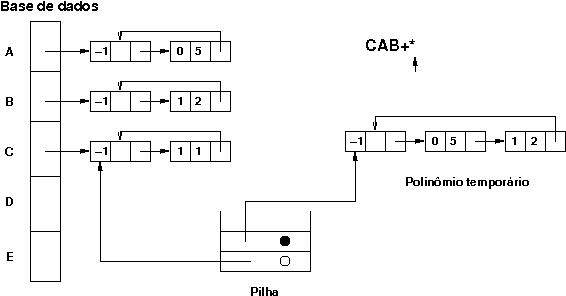

O objetivo desta tarefa é integrar a implementação do módulo polinomios.c desenvolvido para a tarefa 02 com um mecanismo de avaliação de expressões pós-fixas utilizando uma pilha.
As operações serão feitas sobre uma base de dados (um vetor) que contém cinco polinômios, nomeados com as letras de A a E. Inicialmente, o usuário pode preencher a base com polinômios formados por um único termo, sendo que polinômios mais elaborados podem ser construídos a partir da avaliação de expressões. As expressões são escritas na forma pós-fixa e podem incluir os operadores binários +, -, * e o operador unário ~. Alguns exemplos de expressões válidas são:
A~ AB+ AB-BC+*
Para auxiliar a avaliação das expressões deverá ser implementada uma estrutura do tipo pilha, que deverá conter apontadores para polinômios. A figura abaixo ilustra um momento da avaliação da expressão CAB+* (equivalente à expressão C*(A+B) em notação infixa) imediatamente antes do tratamento do operador *. Na primeira posição da pilha há um apontador para o polinômio C da base de dados. Na segunda posição há um apontador para o polinômio resultante da soma A+B. Após o cálculo final da expressão, este polinômio deverá ser liberado. O polinômio C, no entanto, só poderá ser liberado mediante uma chamada explícita à função de liberação de memória pelo usuário do programa. Para diferenciar polinômios temporários (auxiliares para o cálculo da expressão) dos polinômios da base de dados, todo elemento empilhado deve conter um apontador e uma marca (círculos vazios ou cheios na fígura).

Para que esta implementação de pilhas possa ser usada livremente em outros contextos, os elementos empilhados são do tipo void *.
A X e c atribui o termo (e,c) ao polinômio X; L X libera espaço ocupado pela representação de X; I X imprime X; R X expr X recebe o resultado da expressão pós-fixa expr; H imprime resumo dos comandos; X ou Q encerra interpretação; # linha de comentário.
Os eventuais argumentos de cada comando podem ser seguidos de comentários. Os testes estão separados em três grupos da seguinte forma:
O arquivo polinomios.c já deve ter sido desenvolvido pelo aluno. Além da implementação da função SubPolinomios podem ser feitas melhorias sobre a versão entregue no laboratório nº 2.
Não é permitido modificar os arquivos de interface (arquivos .h).
Não é permitido usar recursão.
É permitida a declaração de rotinas auxiliares.
Em caso de erro de execução, deve ser emitida uma mensagem de erro e o programa deve ser interrompido por meio de uma chamada à macro IMPRIME_ERRO conforme o exemplo no arquivo incompleto calculadora.c.
A função CalcExpr deve devolver sempre um novo polinômio, mesmo que a expressão seja uma variável simples como é o caso do teste arq11.in.
Para fazer acesso aos elementos da pilha no módulo calculadora, só é permitida a utilização das rotinas presentes na interface pilha.h. Não é permitido o acesso direto aos campos topo ou vetor. Note que esta política torna mais simples, por exemplo, a substituição da implementação sequencial de pilhas por uma implementação ligada.
Devem ser utilizadas as macros MALLOC e FREE fornecidas com o pacote balloc. A sua implementação não pode utilizar as operações habituais de alocação.
O arquivo tudo.zip contém todos os testes e seus resultados, bem como os arquivos principal.c, polinomios.h, pilha.h, calculadora.h, boolean.h e versões incompletas dos arquivos polinomios.c, pilha.c e calculadora.c, além do pacote balloc.
Devem ser submetidos os arquivos polinomios.c, pilha.c e calculadora.c